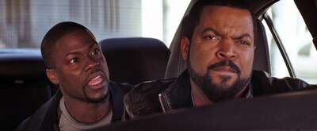
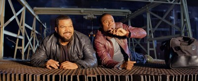
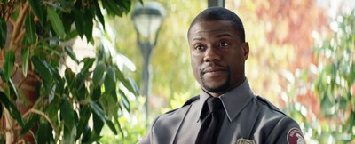
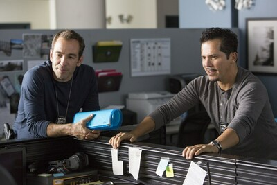
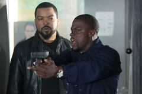
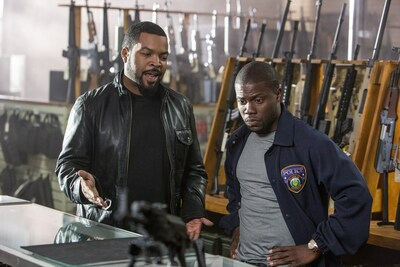
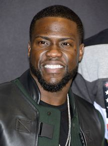
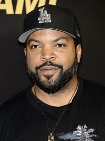
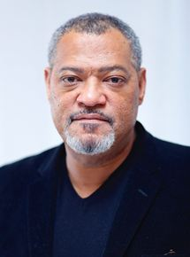

Fiche du film
Synopsis et détails
Ben, agent de sécurité dans un lycée, tente en vain de prouver qu’il est plus qu’un geek baratineur à James, grand frère protecteur de sa petite amie et flic aux méthodes musclées. Quand Ben est enfin accepté à l’Académie de l’APD (Atlanta Police Department), il demande la bénédiction de James pour épouser Angela, pensant avoir enfin gagné son respect. Sceptique, James le met à l’épreuve pour lui apprendre le métier et voir s'il est digne ou non d’épouser sa soeur. Durant 24 heures il devra patrouiller avec lui dans les rues d’Atlanta. Mais ce qui devait être une patrouille ordinaire se transforme en véritable poursuite contre le crime. James constatera alors que la répartie de Ben est aussi dangereuse et rapide que ses propres balles.
Ce film est sorti en .
Acteurs principaux : Ice Cube, Kevin Hart ou encore Laurence FishBurne
Images du film :
     Acteurs principaux :
  Réalisateur :